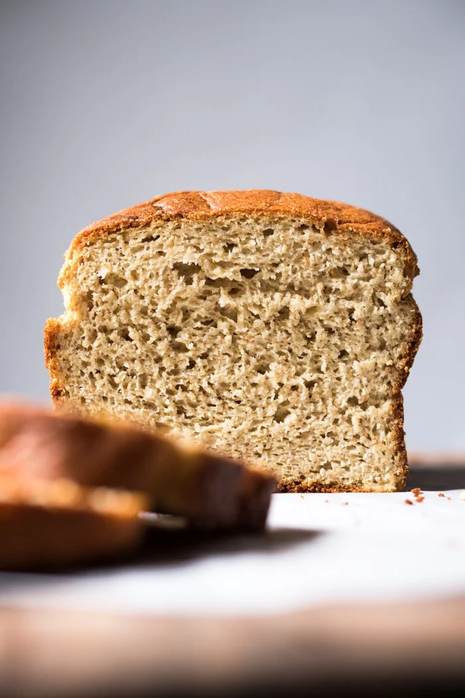

Gluten Free Keto Bread with Yeast

This recipe is both gluten free and has yeast. However, it is extra soft, fluffy and absolutely delicious with a killer crumb.
With half the amount of eggs as your usual low card bread recipe.
Ingredients
- 2 teaspoons active dry yeast
- 2 teaspoons inulin or maple sirup, honey, to feed the yeast*
- 120 ml water lukewarm between 105-110°F
- 168 g almond flour **
- 15 g whey protein isolate
- 18 g psyllium husk finely ground
- 2 teaspoons xanthan gum or 4 teaspoons ground flaxseed meal**
- 2 teaspoons baking powder
- 1 teaspoon kosher salt
- 1/4 teaspoon cream of tartar
- 1/8 teaspoon ground ginger
- 1 egg at room temperature
- 110 g egg whites about 3, at room temperature
- 56 g grass-fed unsalted butter or ghee, melted and cooled
- 1 tablespoon apple cider vinegar
- 58 g sour cream or coconut cream + 2 tsp apple cider vinegar
Instructions
-
See recipe video for guidance on keto yeast breads.
And be sure to check out the post for full deets, tips and possible subs!
-
Line a 8.5 x 4.5 inch loaf pan with parchment paper (an absolute must!). Set aside.
-
Add yeast and maple syrup (to feed the yeast, see notes) to a large bowl. Heat up water to 105-110°F,
and if you don't have a thermometer it should only feel lightly warm to touch. Pour water over yeast
mixture, cover bowl with a kitchen towel and allow to rest for 7 minutes.
The mixture should be bubbly, if it isn't start again (too cold water won't activate the yeast
and too hot will kill it).
-
Mix your flours while the yeast is proofing. Add almond flour, flaxseed meal, whey protein powder,
syllium husk, xanthan gum, baking powder, salt, cream of tartar and ginger to a medium bowl and
whisk until thoroughly mixed. Set aside.
-
Once your yeast is proofed, add in the egg, egg whites, lightly cooled melted butter
(you don't want to scramble the eggs or kill the yeast!) and vinegar. Mix with an electric mixer
for a couple minutes until light and frothy. Add the flour mixture in two batches,
alternating with the sour cream, and mixing until thoroughly incorporated.
You want to mix thoroughly and quickly to activate the xanthan gum, though the dough will
become thick as the flours absorb the moisture.
-
Transfer bread dough to prepared loaf pan, using a wet spatula to even out the top.
Cover with a kitchen towel and place in a warm draft-free space for 50-60 minutes until the
dough has risen just past the top of the loaf pan. How long it takes depends on your altitude,
temperature and humidity- so keep an eye out for it every 15 minutes or so. And keep in mind
that if you use a larger loaf pan it won't rise past the top
-
Preheat oven to 350°F/180°C while the dough is proofing. And if you're baking at high altitude,
you'll want to bake it at 375°F/190°C.
-
Place the loaf pan over a baking tray and transfer gently into the oven. Bake for 45-55 minutes
until deep golden, covering with a lose foil dome at minute 10-15 (just as it begins to brown).
Just be sure that the foil isn't resting directly on the bread.
-
Allow the bread to rest in the loaf pan for 5 minutes and transfer it to a cooling rack.
Allow to cool completely for best texture- this is an absolute must, as your keto loaf will
continue to cook while cooling! Also keep in mind that some slight deflating is normal,
don't sweat it!
-
Keep stored in an airtight container (or tightly wrapped in cling film) at room temperature
for 4-5 days, giving it a light toast before serving. Though you'll find that this keto bread
is surprisingly good even without toasting!